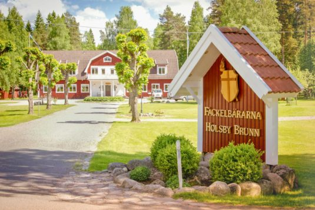

Holsbybrunn är platsen jag växte upp på. Det är en trygg oas där det känns som att tiden har stått still. På bilden syns bibelskolan som ligger mitt i samhället. Jag är inte religiös, men jag uppskattar dem då de alltid har ett leende på läpparna, är hjälpsamma och hur väl de sköter om miljön omkring dem.
Min programmeringsresa tog fart när jag läste Nätverks- och systemadminstration vid högskolan i Skövde. Inledningsvis fick jag göra en del terminalspel i C++, och senare fick vi göra systemskript i Perl samt Powershell. Utöver det så fick vi även jobba med något databasspråk, men jag minns inte vilket. Sedan har jag även skrivit en egen liten app i Python med framworket (stygga anglicismer) Kivy. Slutligen så har jag gjort en online bootcamp där jag lärt mig frontend i JS, vilket ledde till att jag gjorde ett litet rita-gissa spel om svenska idiomatiska uttryck.